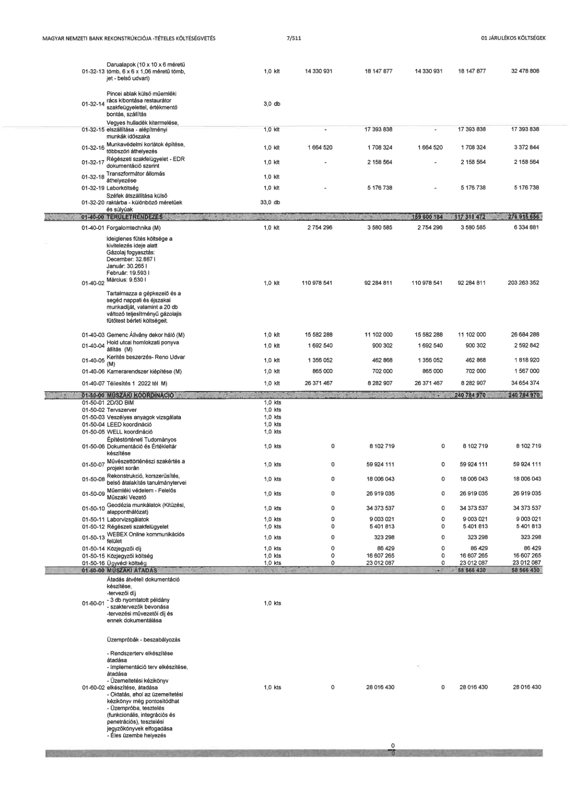

| Tétel | Megjegyzés | Menny. | Egys. | Anyag e.ár (net HUF) | Díj e.ár (net HUF) | Anyag összesen (net HUF) | Díj összesen (net HUF) | Anyag+Díj összesen (net HUF) |
|---|---|---|---|---|---|---|---|---|
| 01-32-13 Darualapok (10 x 10 x 6 méretű tömb, 6 x 6 x 1,06 méretű tömb, jet - belső udvari) | NaN | 1,0 | klt | 14 330 931 | 18 147 877 | 14 330 931 | 18 147 877 | 32 478 808 |
| 01-32-14 Pincei ablak külső műemléki rács kibontása restaurátor szakfelügyelettel, értékmentő bontás, szállítás | NaN | 3,0 | db | 0 | 0 | 0 | 0 | 0 |
| 01-32-15 Vegyes hulladék kitermelése, elszállítása - alépítményi munkák időszaka | NaN | 1,0 | klt | 0 | 17 393 838 | 0 | 17 393 838 | 17 393 838 |
| 01-32-16 Munkavédelmi korlátok építése, többszöri áthelyezés | NaN | 1,0 | klt | 1 664 520 | 1 708 324 | 1 664 520 | 1 708 324 | 3 372 844 |
| 01-32-17 Régészeti szakfelügyelet - EDR dokumentáció szerint | NaN | 1,0 | klt | 0 | 2 158 564 | 0 | 2 158 564 | 2 158 564 |
| 01-32-18 Transzformátor állomás áthelyezése | NaN | 1,0 | klt | 0 | 0 | 0 | 0 | 0 |
| 01-32-19 Laborköltség | NaN | 1,0 | klt | 0 | 5 176 738 | 0 | 5 176 738 | 5 176 738 |
| 01-32-20 Széfek átszállítása külső raktárba - különböző méretűek és súlyúak | NaN | 33,0 | db | 0 | 0 | 0 | 0 | 0 |
| 01-40-00 TERÜLETRENDEZÉS | NaN | NaN | NaN | 0 | 0 | 159 600 184 | 117 315 472 | 276 915 656 |
| 01-40-01 Forgalomtechnika (M) | NaN | 1,0 | klt | 2 754 296 | 3 580 585 | 2 754 296 | 3 580 585 | 6 334 881 |
| 01-40-02 Ideiglenes fűtés költsége a kivitelezés ideje alatt (2022. November - 2023. Március: 9 530 l / Hónap)\n\nTartalmazza a gépkezelő és a segéd nappali és éjszakai munkadíját, valamint a 20 db változó teljesítményű gázolajis fűtőtest bérleti költségeit. | NaN | 1,0 | klt | 110 978 541 | 92 284 811 | 110 978 541 | 92 284 811 | 203 263 352 |
| 01-40-03 Gemenc Állvány dekor háló (M) | NaN | 1,0 | klt | 15 582 288 | 11 102 000 | 15 582 288 | 11 102 000 | 26 684 288 |
| 01-40-04 Hold utcai homlokzati ponyva állítás (M) | NaN | 1,0 | klt | 1 692 540 | 900 302 | 1 692 540 | 900 302 | 2 592 842 |
| 01-40-05 Kerítés beszerzés- Reno Udvar (M) | NaN | 1,0 | klt | 1 356 052 | 462 868 | 1 356 052 | 462 868 | 1 818 920 |
| 01-40-06 Kamerarendszer kiépítése (M) | NaN | 1,0 | klt | 865 000 | 702 000 | 865 000 | 702 000 | 1 567 000 |
| 01-40-07 Téliesítés 1 2022 tél M) | NaN | 1,0 | klt | 26 371 467 | 8 282 907 | 26 371 467 | 8 282 907 | 34 654 374 |
| 01-50-00 MŰSZAKI KOORDINÁCIÓ | NaN | NaN | NaN | 0 | 0 | 0 | 240 784 970 | 240 784 970 |
| 01-50-01 2D/3D BIM | NaN | 1,0 | kts | 0 | 0 | 0 | 0 | 0 |
| 01-50-02 Tervszerver | NaN | 1,0 | kts | 0 | 0 | 0 | 0 | 0 |
| 01-50-03 Veszélyes anyagok vizsgálata | NaN | 1,0 | kts | 0 | 0 | 0 | 0 | 0 |
| 01-50-04 LEED koordináció | NaN | 1,0 | kts | 0 | 0 | 0 | 0 | 0 |
| 01-50-05 WELL koordináció | NaN | 1,0 | kts | 0 | 0 | 0 | 0 | 0 |
| 01-50-06 Építéstörténet Tudományos Dokumentáció és Értékleltár készítése | NaN | 1,0 | kts | 0 | 8 102 719 | 0 | 8 102 719 | 8 102 719 |
| 01-50-07 Művészettörténészi szakértés a projekt során | NaN | 1,0 | kts | 0 | 59 924 111 | 0 | 59 924 111 | 59 924 111 |
| 01-50-08 Rekonstrukció, korszerűsítés, belső átalakítás tanulmánytervei | NaN | 1,0 | kts | 0 | 18 006 043 | 0 | 18 006 043 | 18 006 043 |
| 01-50-09 Műemléki védelem - Felelős Műszaki Vezető | NaN | 1,0 | kts | 0 | 26 919 035 | 0 | 26 919 035 | 26 919 035 |
| 01-50-10 Geodézia munkálatok (Kitűzési, alapponthálózat) | NaN | 1,0 | kts | 0 | 34 373 537 | 0 | 34 373 537 | 34 373 537 |
| 01-50-11 Laborvizsgálatok | NaN | 1,0 | kts | 0 | 9 003 021 | 0 | 9 003 021 | 9 003 021 |
| 01-50-12 Régészeti szakfelügyelet | NaN | 1,0 | kts | 0 | 5 401 813 | 0 | 5 401 813 | 5 401 813 |
| 01-50-13 WEBEX Online kommunikációs felület | NaN | 1,0 | kts | 0 | 323 298 | 0 | 323 298 | 323 298 |
| 01-50-14 Közjegyzői díj | NaN | 1,0 | kts | 0 | 86 429 | 0 | 86 429 | 86 429 |
| 01-50-15 Közjegyzői költség | NaN | 1,0 | kts | 0 | 16 607 265 | 0 | 16 607 265 | 16 607 265 |
| 01-50-16 Ügyvédi költség | NaN | 1,0 | kts | 0 | 23 012 087 | 0 | 23 012 087 | 23 012 087 |
| 01-60-00 MŰSZAKI ÁTADÁS | NaN | NaN | NaN | 0 | 0 | 0 | 58 566 430 | 58 566 430 |
| 01-60-01 Átadás átvételi dokumentáció készítése\n-tervezői díj\n- 3 db nyomtatott példány\n- szaknvevők bevonása\n-tervezési művezetöi díj és ennek dokumentálása | NaN | 1,0 | kts | 0 | 0 | 0 | 0 | 0 |
| 01-60-02 Üzempróbák - beszabályozás\n\n- Rendszerterv elkészítése átadása\n- Implementáció terv elkészítése, átadása\n- Üzemeltetési kézikönyv elkészítése, átadása\n- Oktatás, ahol az üzemeltetési kézikönyv még pontosítódhat\n- Üzempróba, tesztelés (funkcionális, integrációs és penetrációs), tesztelési jegyzőkönyvek elfogadása\n- Éles üzembe helyezés | NaN | 1,0 | kts | 0 | 28 016 430 | 0 | 28 016 430 | 28 016 430 |
